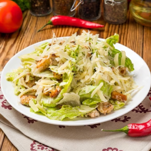
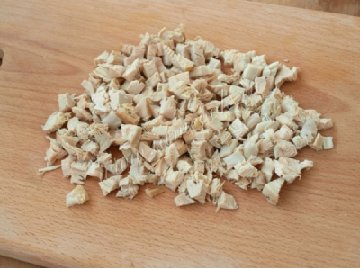
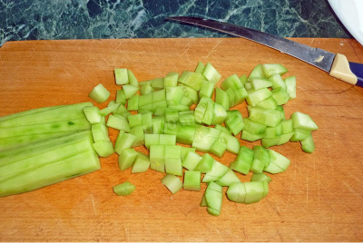
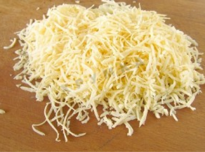

Салат из пекинской капусты и курицы
Рейтинг: 4,6
Просмотры: 19
Понравилось: 1
Отзывы: 2
Ингредиенты
| Курица | 200 г |
| Пекинская капуста | 200 г |
| Огурец | 200 г |
| Сыр | 200 г |
| Сметана | 200 г |
Категория: салат
Сложность: легко
Время приготовления: 20 минут
Время непосрественного участия человека: 20 минут
Количество порций: 4
Энергетическая ценность: 205 ккал на 100 г
Пошаговый рецепт
- Отварите курицу. Нарежте курицу кубиками.
 -
Нарежте огурец кубиками
 -
Произвольно нашинкуйте пекинскую капусту

-
Натереть сыр
 - Заправить сметаной и перемешать
Видеорецепт
Рекомендации
Заправьте салат перед употреблением.
Отзывы
Ann.
Очень понравился салат. Просто и быстро.
Рита.
Получился салат просто восхитительным, а главное просто.
Валентина.
Впервые приготовила этот салат. Очень понравился.